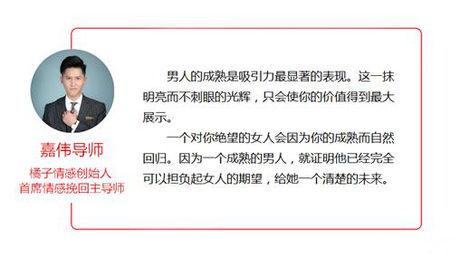

官方二维码
免费情感热线电话
4006-299-520

官方二维码
免费情感热线电话
4006-299-520

大家好，我们是橘子情感。专注情感，为爱而生。 从业八年以来，橘子情感始终秉承着“专注情感、专业服务、专心经营”的原则， 致力于为大家提供挽回爱情、挽救婚姻、 分离小三、订制爱情等两性情感服务。
今天的这篇文章，我们会通过一个真实案例，详细讲解挽回中快速有效的复合技巧。
2015年的6月盛夏，小磊女友琪琪友介绍认识。初次见面时琪琪身着一袭淡蓝色的长裙，修长的身材甜美的长相给 小雷留下了挥之不去的印象。
之后 小雷便展开了主动追求，几个月里两人慢慢的熟识、了解，15年的10月中旬，两人在朋友们的见证下正式确立了关系。
恋爱初期两人的关系非常融洽，每个周末都腻在一起。 小雷是个对待感情非常投入的男生，所以对待琪琪他几乎是毫无保留的呵护、付出，但随着时间的增加，他们也开始有了一些争吵。
小雷之前的感情经历不多，面对争执的时候，表现的有些情绪化，虽然 小雷很爱琪琪，但他渐渐感觉到自己有些驾驭不了这段感情。琪琪对他总是透露着一丝失望的态度，说觉得 小雷不成熟，在一起很累。
其实 小雷很清楚，他们之间问题的根源并不是因为 小雷太粘人，而是琪琪的心里似乎对他并不在意。这让 小雷心里很不安，两人的争吵越来越多，有过几次分手，但最后 小雷都琪琪把哄了回来。
小雷不知道该怎么去改变两人的相处模式，只能处处迎合琪琪，低姿态的去维持这段关系，可渐渐两人的相处气氛却越来越奇怪。 小雷在这段感情里太被动，琪琪慢慢的失去了兴趣和热情，从 小雷的角度来看，琪琪对他的态度开始变得冷淡起来。
16年的二月初，刚刚过完新年没几天，两人因为一点小事争吵。这次 小雷也没有用控制好自己的情绪，争执愈演愈烈，琪琪最后直接提出分手，挂断了 小雷的电话，之后不论小雷怎么打电话始终是被挂断。
小雷意识到了问题的严重，直接去琪琪家里找她。但不论他怎么认错、挽留，琪琪分手的态度没有丝毫动摇，两人的关系已经陷入死局。 最终导致被拉黑，陷入了断联的尴尬境地。
失恋后表现出痛苦、抑郁、煎熬，这些恰恰是女生不愿意看到的。女生不喜欢悲观、情绪化的男人，这会让她们觉得你不够强大、不够成熟、内心对感情的依赖太重 （此时你的依赖对她来说是压力），从而更加坚定她离开你的想法。
小雷的当时局面十分困窘，目标的分手态度决绝，并且对小雷完全失去了兴趣，不愿意再与他产生任何交集。想要扭转当前的局面， 小雷必须要在挽回中进行以下五个方面的操作和提升。
两个人在相处中的高低位是由供需关系和价值对比决定的， 小雷在这个方面就出了问题，男方的对女生的需求过高，又一直对其付出。女生当然会认为自己是高价值、被需求、握着主导权的位置，这样的卖方市场中买家是没有任何话语权的。
而且，一段健康的情感关系中也绝对不是只由其中一方来掌握主导权的。
在任何一段关系中，只有价值和需求相等，关系才能稳定平衡的维持下去。之后的几天里阿军又在导师的安排下跟琪琪进行过几次互动，除了无需求的开场，过程中又增加了一些幽默调侃的内容来维持谈话的舒适度，慢慢与目标在分手后建立起了基本的联系感,偶尔像朋友一样开开玩笑也不回引起抵触。
琪琪希望他的另一半能更加的成熟可靠，能够在相处中给她安全感。如果想让目标觉得你成熟，那在进行互动的时候你就得把她当成小孩子来对待。
通常在分手后能引导目标与你保持朋友关系，说明对方已经是在给你机会了。也许她并没有考虑过自己要和你复合，但她一定会留意你接下来的近况和改变，所以你要做的是迅速给自己重新定位，去刷新目标对你的固有印象和看法。
大部分女生与琪琪一样，她们在感情中的诉求都是希望拥有一个成熟的伴侣，她们希望你能变得更好，更加值得她去依靠，但包括案例中 小雷在内的很多人都让对方失望了。
另外，在约会中要给对方增加一些不可预测的因素，比如你要带目标去参加一个自己的朋友聚会。那最好的方式是先不要告诉她你的目的，在当天提前两个小时约目标出来聊聊天、喝点东西，然后把朋友聚会做一个突发事件。
目的是多给对方一些适应你的节奏的机会，这会让对方在潜意识里觉得自己需要更好状态来与你进行互动，从而更加重视你的存在，关系也有了进一步升温，已经进入了相对融洽的氛围。
想想在这段感情中你的不安全感来自于哪里？怕她离开你。怕她跟别人在一起。
为什么你们在一起时对方没有这种和你一样的情绪？ 第一，你给了对方太多安全感。第二，目标对你的投资不足。
想要稳定一段关系，你要做的不仅仅是付出，还有索取，想想你能给她的所有东西里面，有什么是别的男人给不了的？根本就没有，你能给的别的男人都能给，所以唯一能让你在她心里变得与众不同的，不是你对她的态度，而是她对你的态度。
关于两性之间的情感，其实还有很多的因素会影响最终的事态走向，在挽回过程中，盲目的行动只会让情况更加恶劣。橘子情感从业多年以来，对于爱情挽回和情感狙击也是自成一套，帮助近万例的男女成功收获幸福。如果您有情感问题，一定要及时采取有效措施解决，不要等到失去了才后悔莫及。
{kind=link}